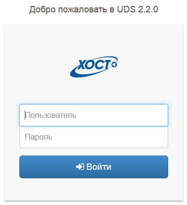
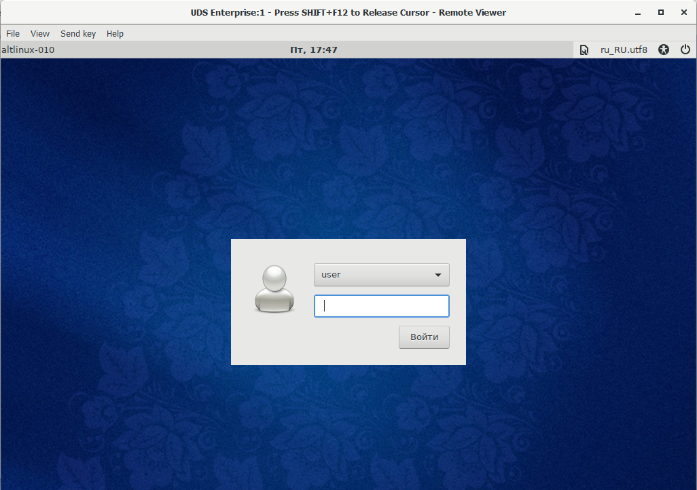

Общие данные
Компонент платформы виртуализции HOTSVM VDI предназначен для виртуализации рабочего стола пользователя.
С помощью специализированного ПО на рабочем месте пользователь может удаленно подключиться в систему, получая доступ ко всем программам, приложениям и данным.
Инструкция по подключению
Подготовка к работе
Скачайте дистрибутивы и установите следующее ПО:
Virt-Viewer
Usb-Dk
Вход в систему
Для входа в систему выполните следующие шаги: 1. Откройте в браузере адрес VDI-портала; 2. В открывшуюся форму введите логин и пароль предоставленный в письме с приглашением на тестирование.

Рис.1 Форма для авторизации
- Выберите нужную ОС и нажмите на иконку для открытия сессии.
Рис.2 Перечень ОС
Если после открытия сессии потребуется ввод логина и пароля для входа в операционную систему, используйте следующие данные: * логин: user; * пароль: vdiuser.

Рис.3 Вход в систему
Если необходимо подключить в сессию USB-устройство с локальной машины, выполните следующие шаги: 1. В окне с открытой сессией выберите пункт меню: Файл → USB Device Selection;
Рис.4 Окно с открытой сессией
- Отметьте нужное устройство в появившемся списке;
Рис.5 Выбор USB-устройства
- Закройте список и дождитесь подключения устройства в сессию.